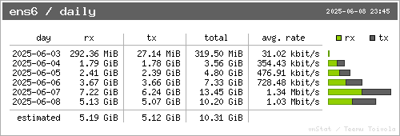

Chrony Graphs [Data Legend]


vnStati Graphs
|
 |
|
Chrony - NTP Statistics
Command: chronyc sources -v
.-- Source mode '^' = server, '=' = peer, '#' = local clock.
/ .- Source state '*' = current best, '+' = combined, '-' = not combined,
| / 'x' = may be in error, '~' = too variable, '?' = unusable.
|| .- xxxx [ yyyy ] +/- zzzz
|| Reachability register (octal) -. | xxxx = adjusted offset,
|| Log2(Polling interval) --. | | yyyy = measured offset,
|| \ | | zzzz = estimated error.
|| | | \
MS Name/IP address Stratum Poll Reach LastRx Last sample
===============================================================================
^? server1 1 10 377 783 +129us[ +129us] +/- 10ms
^+ server2 3 10 377 720 -2431us[-2431us] +/- 17ms
^? server3 3 10 377 876 -1167us[-1125us] +/- 8325us
^* server4 1 10 377 827 -39us[+3474ns] +/- 5539us
^- server5 2 10 377 766 +1812us[+1812us] +/- 17ms
^- server6 1 10 377 469 +6841us[+6841us] +/- 16ms
Command: chronyc selectdata -v
. State: N - noselect, s - unsynchronised, M - missing samples,
/ d/D - large distance, ~ - jittery, w/W - waits for others,
| S - stale, O - orphan, T - not trusted, P - not preferred,
| U - waits for update,, x - falseticker, + - combined, * - best.
| Effective options ---------. (N - noselect, P - prefer
| Configured options ----. \ T - trust, R - require)
| Auth. enabled (Y/N) -. \ \ Offset interval --.
| | | | |
S Name/IP Address Auth COpts EOpts Last Score Interval Leap
=======================================================================
T server1 N ----- ----- 314 1.0 -10ms +10ms N
+ server2 Y ----- --TR- 250 1.0 -20ms +14ms N
T server3 N ----- ----- 406 1.0 -9597us +7256us N
* server4 Y ----- --TR- 357 1.0 -5570us +5328us N
D server5 Y ----- --TR- 296 1.0 -13ms +20ms N
D server6 N ----- ----- 0 1.0 -9509us +12ms N
Command: chronyc sourcestats -v
.- Number of sample points in measurement set.
/ .- Number of residual runs with same sign.
| / .- Length of measurement set (time).
| | / .- Est. clock freq error (ppm).
| | | / .- Est. error in freq.
| | | | / .- Est. offset.
| | | | | | On the -.
| | | | | | samples. \
| | | | | | |
Name/IP Address NP NR Span Frequency Freq Skew Offset Std Dev
==============================================================================
server1 33 19 569m +0.005 0.009 +198us 149us
server2 24 10 413m +0.016 0.037 -2602us 372us
server3 6 5 103m -0.009 0.250 -795us 129us
server4 34 16 585m +0.000 0.024 +319ns 402us
server5 18 9 293m +0.012 0.108 +3024us 556us
server6 11 6 189m -0.038 0.630 +2752us 1680us
Command: chronyc tracking
Reference ID : ERRGGDFB (server1)
Stratum : 2
Ref time (UTC) : Sun Jun 07 12:33:14 2025
System time : 0.000150440 seconds fast of NTP time
Last offset : +0.00001202175 seconds
RMS offset : 0.0001456579 seconds
Frequency : 2.231 ppm fast
Residual freq : +0.001 ppm
Skew : 0.030 ppm
Root delay : 0.0107214526 seconds
Root dispersion : 0.0010245287 seconds
Update interval : 136.2 seconds
Leap status : Normal